Experiment 1 — The Blot Detector
The question
Two passages in the transcriptions are flagged [blot]: Letter 39
(Josef Bermann) and Letter 45 (Chaja). A blot is exactly what a censor would
ignore, which makes it worth asking whether the writers hid words under
ordinary-looking blots — and whether more blots exist across the corpus.
What already exists
Surveyed before building: the published literature covers ink bleed-through removal, hyperspectral ink-mismatch detection, and banknote stain scoring. Nothing off-the-shelf detects spill or scribble blots in handwritten letter scans. So the detector below is custom.
How it works
- Otsu-threshold the page to an ink mask.
- Keep only saturated ink pixels (HSV saturation > 40): fresh blue/green pen ink. This drops faded writing ink, pencil, foxing, and black postmark ink.
- Local ink density via a 25 px box filter; flag regions above 50% density.
- Connected components; keep compact blobs between 900 and 60,000 px.
An earlier plain-connected-components version failed: morphological closing merges a blot with adjacent text into one giant low-solidity component. Density separates them.
Validation
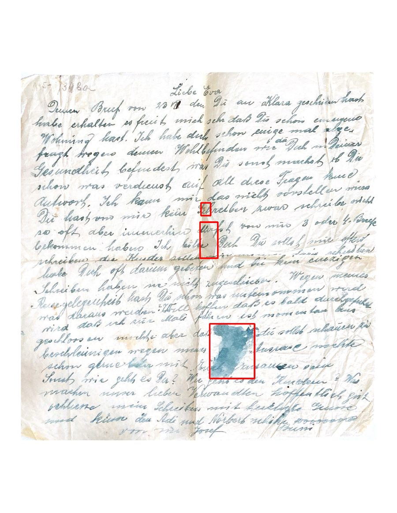
The two known blots, up close
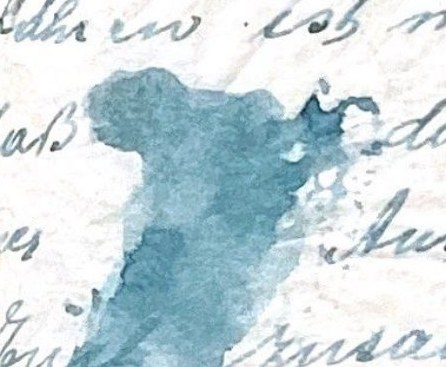
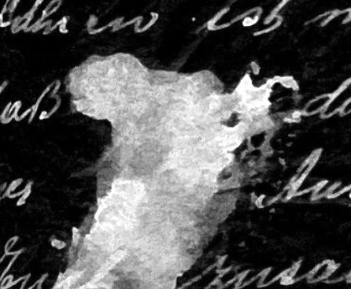
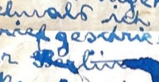
The full sweep
53 PDFs, roughly 100 pages, rendered at 150 dpi. 173 candidates after size and shape filtering; every one visually reviewed.
New blots found
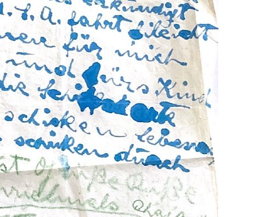
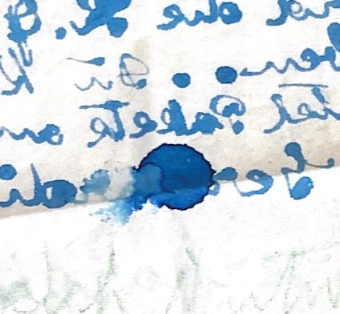
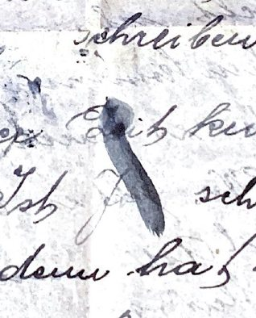
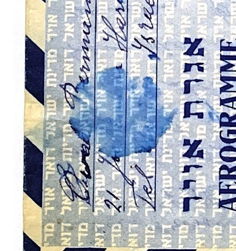
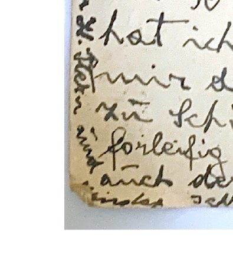
Known false-positive categories, for future runs: postage stamps, postmarks, Israeli aerogramme printed patterns, dense handwriting blocks, page edges and folds, scanner backing visible through tears, blurred writing, and one finger.
Experiment 2 — Lifting Stylus Presses
The concept
Ignore the ink entirely. A stylus or hard pen point leaves a physical groove in the paper even where no ink flows — an inverted binarization problem: enhance the paper's luminance texture instead of the ink.
What already exists
The forensic standards are ESDA (electrostatic detection) and oblique / raking-light photography, plus RTI (camera plus a moving lamp). All three require the physical original. Nothing published recovers embossing from a single diffuse-lit flatbed scan — that was the gap this attempt addressed.
The attempt
- Mask ink via local background subtraction; dilate the mask.
- Work on paper pixels only — hard exclusion, no inpainting, so no ghost artifacts.
- Flatten slow illumination variation in the log domain.
- High-pass at ~8 px to kill broad wrinkles; directional Sobel to favor horizontal text-line-like groove structures.
Results
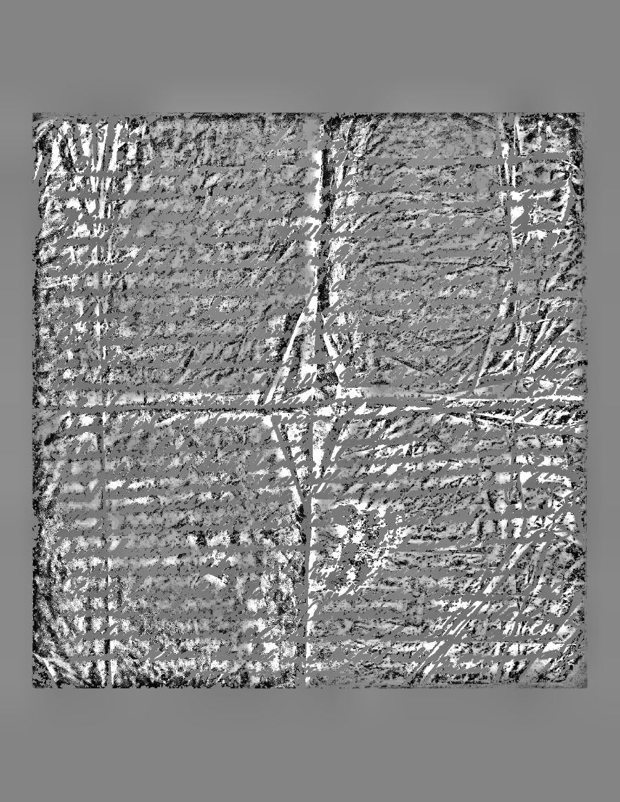
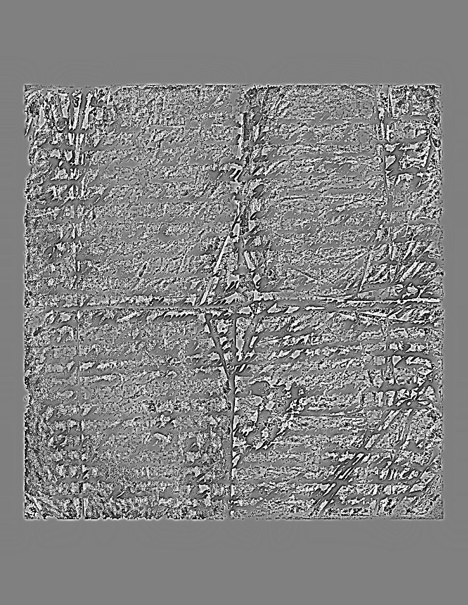
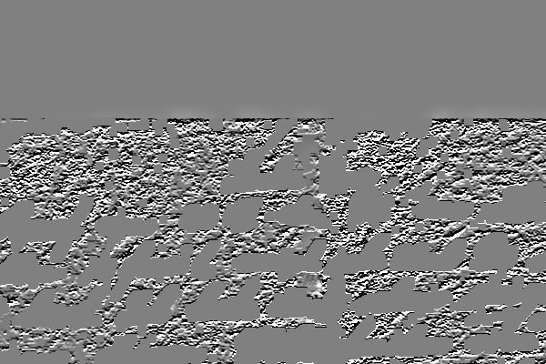
What would actually work
On the originals: raking-light photos with a desk lamp and any camera — one low light position per side. That two-minute setup beats any software on a flat scan. ESDA or RTI if a forensic pass is ever wanted.
Experiment 3 — Multi-Pass Shade Isolation
The question
A blot has finite transparency, layers, colors, and shades. If writing hides under the ink, it may sit at a slightly different shade or depth than the surrounding wash. Slice the blot's shade range into bands and isolate each band separately — like frames of a movie — and the hidden markings should emerge in one of the frames.
How it works
- Auto-detect the blot region (saturated blue ink mask, largest blob plus a calibration margin).
- Find the blot's darkest and lightest shades (2nd/98th percentile of lightness).
- Stepwise isolate each shade band (6- and 12-band passes); stitch into a color-coded composite, a depth map, and an animated dark-to-light sweep.
- Directional passes: per-row, per-column, and diagonal z-score deviation from the local wash, at two thresholds.
- Repeat the row pass at 2× upscale for wider strokes.
37 pass outputs per blot, all saved in the repo under
img/passes/. Script: scripts/shade_isolate.py.
Full technique log: TECHNIQUES.md in the repo.
Experiment 4 — Redacted Postcards
The question
Two postcards carry deliberate redactions in the writer's own pen: a heavy black block over two lines (scan 17) and blue ink dabs on words mid-text (scan 51). Unlike the accidental blots, these were meant to hide. Can anything be recovered from the existing scans?
What was tried
Band isolation, A2 sensitivity sweeps, GrabCut masking, Frangi ridge detection on the block interior, and a speckle analysis of the block's thinner spots (real variance, but the top layer's own unevenness, not under-writing). Then the physics: postcard stock, ink penetration depth, and Kubelka-Munk hiding power.